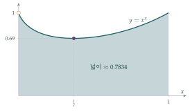

STEP III 2009, 문제 8
계속 읽기 전에 문제를 먼저 읽어 보자. 문제는 STEP Support Programme의 문제 데이터베이스에 있다: step.maths.org/questions/09-s3-q8
도입
모든 학생은 언젠가 \((a + b)^2 \neq a^2 + b^2\)임을 배운다. 이 틀린 등식은 농담 삼아 “신입생의 꿈”(freshman’s dream)이라고 불린다. 이 문제는 그만큼이나 초보자의 실수처럼 보이는 사실을 증명한다. \[\int_0^1 x^x\,\mathrm{d}x = \sum_{n=1}^{\infty} \frac{(-1)^{n+1}}{n^n} = 1 - \frac{1}{2^2} + \frac{1}{3^3} - \frac{1}{4^4} + \cdots,\] 그리고 그 짝인 \(\int_0^1 x^{-x}\,\mathrm{d}x = \sum_{n=1}^\infty \frac{1}{n^n}\)도 성립한다. \(x^x\)의 적분이 \(n^{-n}\)의 합으로 바뀐다니, 믿기 어려울 만큼 좋아 보인다. 그래서 이 등식을 2학년생의 꿈(sophomore’s dream)이라고 부른다. 하지만 이것은 참이며, 요한 베르누이(Johann Bernoulli)가 1697년에 발견하였다.
증명에는 대학에서 끊임없이 만나게 될 세 가지 아이디어가 쓰인다. 지수함수와 거듭제곱을 비교하는 극한(limit), 점화식(reduction formula), 그리고 함수를 거듭제곱급수(power series)로 전개한 뒤 항별로 적분하는 것(term-by-term integration)이다.
시작하기 전에
함수 \(x^x\)는 \(x = 0\)에서 여러분이 아는 어떤 식으로도 정의되지 않는다(\(0^0\)은 모호하다). \(x\)가 위쪽에서 \(0\)에 다가갈 때 이 함수는 어떻게 움직이는가? 계산기로 \(x = 0.1\), \(0.01\), \(0.001\)을 넣어 보아라.
\(0.1^{0.1} \approx 0.794\), \(0.01^{0.01} \approx 0.955\), \(0.001^{0.001} \approx 0.993\)이다. \(1\)에 다가가는 것처럼 보인다. 소문항 (i)이 이를 증명하는데, 이로부터 피적분함수(integrand)가 \(0\) 근처에서 얌전하게 행동하며 적분이 의미를 가짐을 알 수 있다. \((0, 1]\)에서 \(x^x\)의 그래프는 \(1\) 근처에서 시작하여 최솟값까지 내려갔다가 \(x = 1\)에서 다시 \(1\)로 돌아온다(그림 4.5.1).
차근차근 풀기
단계 1 거듭제곱은 로그를 이긴다
\(x \to 0^+\)일 때 \(\ln x \to -\infty\)이다. 어떤 치환을 하면 \(x \to 0^+\)가 \(t \to \infty\)로 바뀌고, \(x^m(\ln x)^n\)이 \(e^{-mt}t^n\)과 비슷한 꼴로 바뀌는가?
\(x = e^{-t}\)로 놓자. \(x \to 0^+\)일 때 \(t \to \infty\)이고 \(\ln x = -t\)이므로 \[x^m(\ln x)^n = e^{-mt}(-t)^n = (-1)^n e^{-mt}t^n \to 0.\] 말로 하면, \(x \to 0\)일 때 \(x\)의 양의 거듭제곱은 \(\ln x\)의 어떤 거듭제곱이 발산하는 것보다도 빠르게 \(0\)으로 간다.■
\(m = n = 1\)이면 \(x\ln x \to 0\)이고, 지수함수는 연속이므로 \(x^x = e^{x\ln x} \to e^0 = 1\)이다.■
단계 2 점화식
\(I_{n+1} = \int_0^1 x^m(\ln x)^{n+1}\,\mathrm{d}x\)를 부분적분(integration by parts)하여라. 어느 인수를 적분해야 하는가? \(x = 0\)에서 경계항은 어떻게 되는가?
\(x^m\)을 적분하고 \((\ln x)^{n+1}\)을 미분하면 \[I_{n+1} = \left[\frac{x^{m+1}}{m+1}(\ln x)^{n+1}\right]_0^1 - \int_0^1 \frac{x^{m+1}}{m+1}\cdot\frac{(n+1)(\ln x)^n}{x}\,\mathrm{d}x.\] \(x = 1\)에서는 \(\ln 1 = 0\)이므로 경계항이 \(0\)이고, \(x \to 0\)일 때는 소문항 (i)에 의해(\(m+1\)과 \(n+1\)을 대입하여) \(0\)으로 수렴한다. 남은 적분은 \(\frac{n+1}{m+1}I_n\)이므로 \[I_{n+1} = -\frac{n+1}{m+1}I_n. \qed\] \(I_0 = \int_0^1 x^m\,\mathrm{d}x = \frac{1}{m+1}\)에서 출발하여 이 공식을 \(n\)번 적용하면 \[I_n = (-1)^n\frac{n!}{(m+1)^{n}}\cdot\frac{1}{m+1} = \frac{(-1)^n\,n!}{(m+1)^{n+1}}. \qed\]
단계 3 급수
\(e^y\)의 급수를 이용하여 \(x^x = e^{x\ln x}\)를 전개하여라. 각 항은 어떤 꼴인가? \(m\)을 어떤 값으로 두면 소문항 (ii)의 적분이 나타나는가?
모든 \(y\)에 대하여 \(e^y = \sum_{n=0}^\infty \frac{y^n}{n!}\)이므로 \[x^x = e^{x\ln x} = \sum_{n=0}^{\infty} \frac{x^n(\ln x)^n}{n!}.\]
소문항 (ii)에서 \(m = n\)으로 두고(\(n = 0\)인 경우는 따로 다루어) \(0\)부터 \(1\)까지 항별로 적분하여라. 무엇이 나오는가?
\(n = 0\)인 항은 \(1\)이고, 이를 적분하면 \(1\)이다. \(n \geq 1\)이면 소문항 (ii)에서 \(m = n\)으로 두어 \(\int_0^1 x^n(\ln x)^n\,\mathrm{d}x = \frac{(-1)^n\,n!}{(n+1)^{n+1}}\)를 얻으므로, \(n\)번째 항의 기여는 \(\frac{(-1)^n}{(n+1)^{n+1}}\)이다. 모두 더하면 \[\int_0^1 x^x\,\mathrm{d}x = 1 - \frac{1}{2^2} + \frac{1}{3^3} - \frac{1}{4^4} + \cdots. \qed\] (\(n = 0\)인 항도 같은 규칙 \(\frac{1}{1^1}\)에 들어맞는다.) 항들은 매우 빠르게 작아진다. 일곱 개의 항만으로 소수점 아래 여섯째 자리까지 정확한 값 \(0.783430\ldots\)을 얻는다.

돌아보기
증가 속도를 비교하려면 치환하라. \(x = e^{-t}\)로 놓아 \(0\)에서의 극한을 익숙한 \(\infty\)에서의 극한으로 바꾸었다.
경계항은 반드시 확인해야 한다. 점화식은 \(x = 0\)에서 경계항이 사라지는 데 의존했고, 바로 여기서 소문항 (i)이 쓰였다.
먼저 급수로, 그다음 적분. 피적분함수를 거듭제곱급수로 전개하여 각 항을 적분함으로써, 초등함수인 원시함수(antiderivative)가 없는 적분을 빠르게 수렴하는 합으로 바꾸었다.
숨은 수학
3단계에서는 무한합과 적분의 순서를 슬그머니 바꾸었다. 즉 \(\int \sum = \sum \int\)로 두었다. 이것이 언제나 허용되는 것은 아니다. 대학에서는 이것이 성립하지 않는 예와, 언제 안전한지 알려 주는 정리들을 만나게 된다. 가장 간단한 정리에 따르면, 급수가 균등수렴(uniform convergence)할 때, 곧 급수의 꼬리를 모든 \(x\)에서 동시에 작게 만들 수 있을 때 순서를 바꾸어도 안전하다. 여기서는 \((0, 1]\)에서 \(|x\ln x| \leq \frac1e\)이므로, \(x\)가 무엇이든 \(n\)번째 항의 크기는 많아야 \(\frac{e^{-n}}{n!}\)이다. 이 상계들의 합은 수렴하므로 꼬리는 균등하게 작고, 순서를 바꾸는 것이 정당화된다. 이 논증을 바이어슈트라스 M-판정법(Weierstrass M-test)이라고 하며, 해석학에서 가장 많이 쓰이는 도구 가운데 하나이다.
“꿈”이 이루어지는 이유
이 항등식은 특별하다. 이는 \(\frac{(x\ln x)^n}{n!}\)의 거듭제곱과 적분 \(\int_0^1 x^n(\ln x)^n\,\mathrm{d}x = \frac{(-1)^n n!}{(n+1)^{n+1}}\)이 정확히 맞아떨어져 \(n!\)이 완벽하게 약분되는 데 달려 있다. 그 밑바탕에서 이 적분은 감마 함수(Gamma function)가 모습을 바꾼 것이다. 치환 \(x = e^{-t/(n+1)}\)을 하면 이 적분은 \(\frac{(-1)^n}{(n+1)^{n+1}}\int_0^\infty t^n e^{-t}\,\mathrm{d}t = \frac{(-1)^n\,\Gamma(n+1)}{(n+1)^{n+1}}\)이 되어, 4.4 절와 연결된다.
이름
“2학년생의 꿈”이라는 이름은 Jonathan Borwein과 공저자들이 2004년 책 Experimentation in Mathematics에서 “신입생의 꿈” \((a + b)^n = a^n + b^n\)의 짝으로 붙인 것이다(신기하게도 “신입생의 꿈”은 어떤 수 체계에서는 참이다. 소수(prime) \(p\)를 법으로 하는 산술에서는 가운데 이항계수(binomial coefficient)가 모두 \(p\)로 나누어떨어지므로 \((a + b)^p = a^p + b^p\)이다). Borwein은 실험수학(experimental mathematics)의 선구자였다. 실험수학에서는 컴퓨터를 이용해 이와 같은 항등식을 발견하고, 그런 다음 손으로 증명한다.
사고 기술
피적분함수가 각 항을 적분할 수 있는 거듭제곱급수를 가진다면, 각 항을 적분하여 그 결과를 더하라.
이는 초등함수인 원시함수가 없는 적분의 값을 구하는 강력한 방법이다. 합과 적분의 순서를 바꾸는 것이 정당한지 항상 따져 보아라. 대개는 정당하지만, 왜 그런지 알고 있어야 한다.
더 도전하기
짝이 되는 등식. \(\displaystyle\int_0^1 x^{-x}\,\mathrm{d}x = \sum_{n=1}^{\infty}\frac{1}{n^n} \approx 1.2913\)임을 보여라.
최솟값. \(x^x\)가 \((0, \infty)\)에서 \(x = \frac1e\)일 때 최솟값 \(e^{-1/e}\)를 가짐을 보여라.
몇 개의 항이 필요한가? 항이 감소하는 교대급수(alternating series)에서는 중간에 멈추었을 때의 오차가 처음으로 생략한 항보다 작다. 소수점 아래 여섯째 자리까지 정확하게 구하려면 \(\int_0^1 x^x\,\mathrm{d}x\)의 급수에서 몇 개의 항이 필요한가?
사촌 격인 문제. 같은 방법으로 \(\displaystyle\int_0^1 x^2\ln x\,\mathrm{d}x = -\frac19\)이고 \(\displaystyle\int_0^1 \frac{\ln x}{1 - x}\,\mathrm{d}x = -\sum_{n=1}^\infty \frac{1}{n^2}\)임을 보여라. (2.4 절에 의해 이 값은 \(-\frac{\pi^2}{6}\)이다.)
더 읽을거리
Jonathan Borwein, David Bailey & Roland Girgensohn, Experimentation in Mathematics (A. K. Peters). 이 이름의 출처이며, 컴퓨터로 발견한 더 많은 항등식이 실려 있다.
William Dunham, The Calculus Gallery (Princeton University Press). 뉴턴(Newton)부터 르베그(Lebesgue)까지 해석학의 걸작들을 다루며, 베르누이의 업적도 포함되어 있다.
Mary Hart, Guide to Analysis (Palgrave). 균등수렴과, 합과 적분의 순서를 언제 바꿀 수 있는지를 명료하게 설명한다.